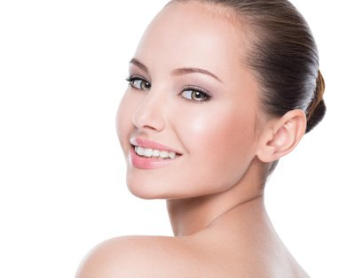
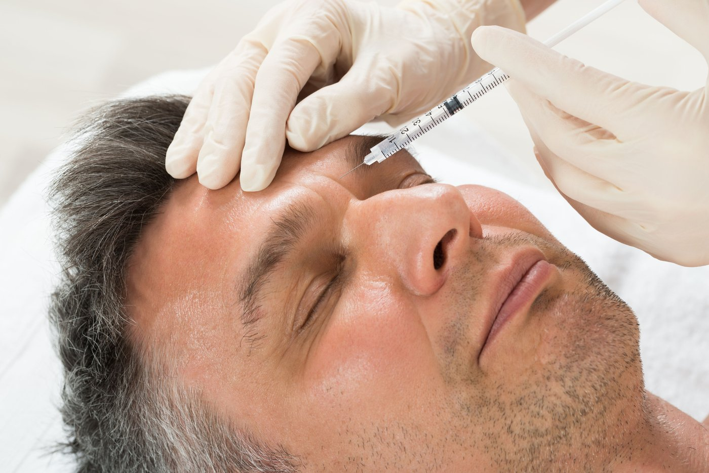
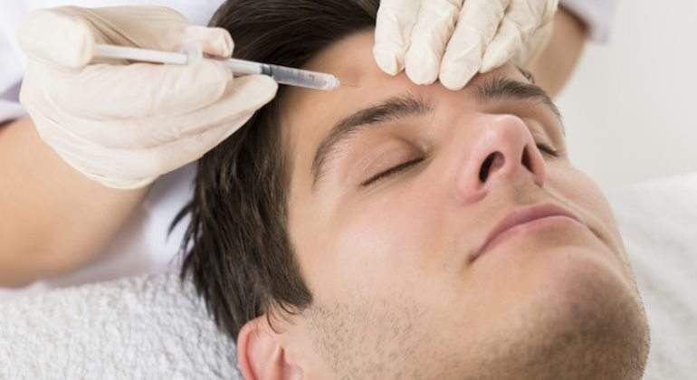
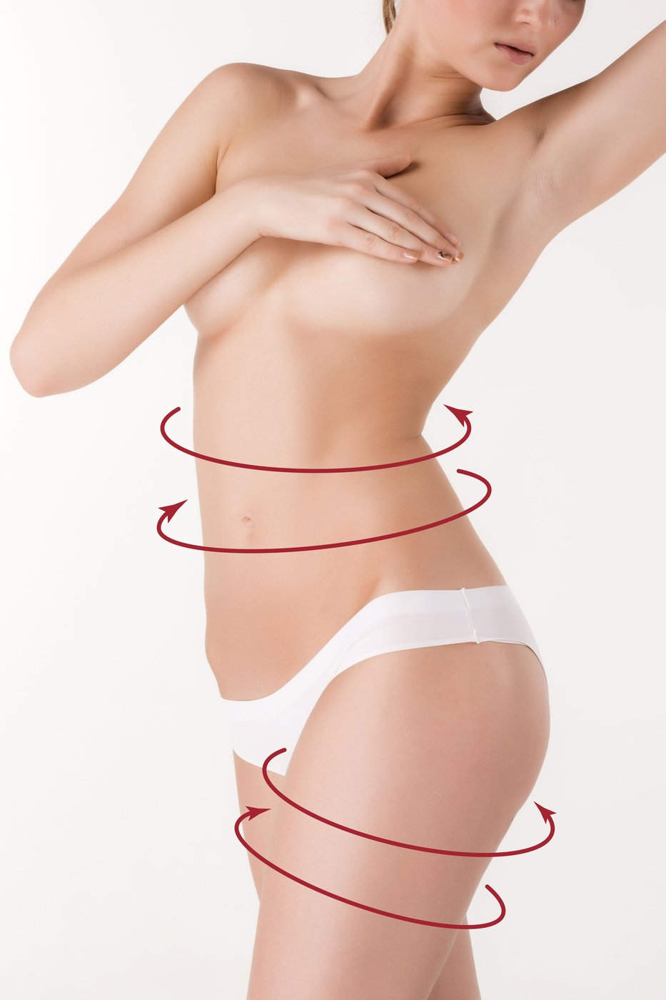
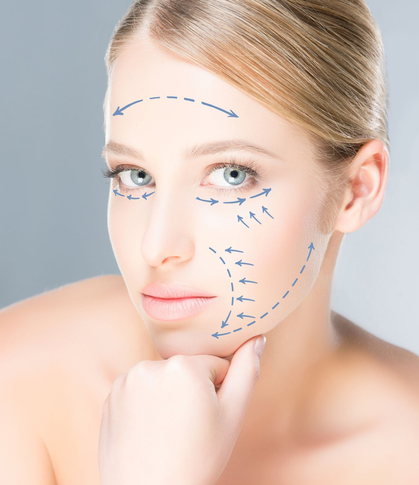

Ácido hialurónico
Hidrata en profundidad, restaura volúmenes y suaviza líneas de expresión. Sus distintas presentaciones permiten definir el óvalo facial, corregir ojeras o perfilar los labios.
Relleno · hidrataciónDirigida por nuestra doctora, licenciada en Medicina y Cirugía y pionera en técnicas de infiltración y rejuvenecimiento integral. Todos los tratamientos parten de una valoración clínica individual, y el criterio es siempre el mismo: la naturalidad como norma, no como excepción.
En Qualyderm nuestros tratamientos se basan en la naturalidad y la calidad, con resultados visibles pero no llamativos, realizados de forma personalizada con las técnicas más innovadoras por nuestra doctora, especialista en medicina estética, buscando siempre la armonía tanto en el rostro como en el cuerpo. Qualyderm trabaja con la acreditación de la Consejería de Sanidad de la Comunidad de Madrid, registrada con el nº SSO1345.
Hidrata en profundidad, restaura volúmenes y suaviza líneas de expresión. Sus distintas presentaciones permiten definir el óvalo facial, corregir ojeras o perfilar los labios.
Relleno · hidratación
Microinyecciones de ácido hialurónico no reticulado con vitaminas, aminoácidos, minerales y antioxidantes para hidratar, reafirmar y dar luminosidad a rostro, cuello, escote y manos.
Luminosidad
Relajan la contracción muscular que marca las arrugas de frente, entrecejo y contorno de ojos, con un gesto natural. También indicados en hiperhidrosis de axilas, manos o pies.
Líneas de expresiónCadenas de ADN que actúan como bioestimulador del tejido: reparan, estimulan el colágeno, hidratan en profundidad y ayudan a restaurar pieles cansadas o dañadas por el sol.
Regeneración
Activan la producción de colágeno propio en la dermis profunda — no rellenan, regeneran. Rejuvenecimiento natural y progresivo en rostro, cuello, escote, manos o cuerpo.
Colágeno
Infiltración de un cóctel de activos venotónicos, lipolíticos y reafirmantes para tratar grasa localizada, celulitis y flacidez en cartucheras, abdomen, glúteos o cadera.
Silueta
Crean una malla tridimensional de colágeno y elastina que define un contorno natural y previene la flacidez. En rostro tratan óvalo, surcos nasogenianos, comisuras labiales, arrugas de marioneta, mentón y cuello; en cuerpo, brazos, abdomen, muslos o glúteos. Material totalmente reabsorbible.
Efecto tensorCuéntanos qué te preocupa y qué te gustaría conseguir. La doctora estudiará tu caso y te propondrá el camino más adecuado — sin presión, sin letra pequeña.
Reservas online por Velsy